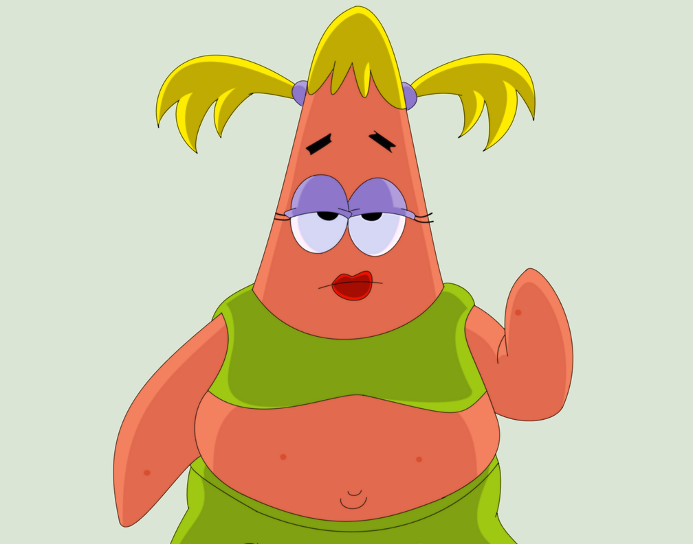

Patricia

Objective
To learn as much as I can before I die, ultimately. This exercize specifically is to learn to code.
Education
- Thomas Jefferson University - Philadelphia,PA
- Master of Science in Bioscience Technology
- 3.86 GPA
- Rutgers, the State University of New Jersey-Camden, NJ
- Bachelor of Arts, English
Work Experience
- Rowan College at Burlington County, Mount Laurel, NJ
- Part-time Microbiology Lab Technichian
- Prepare sterile media and subcultures of multiple varieties for students
- Maintain lab equipment
Skills
- Cell Culture
- PCR and Gel Electrophoresis
- Microscopy
- Sterile media preparation
Awards and Certificates
- Division of Science, Mathematics, and Technology-Biology
- Leadership LIVE leadership development series-Certificate of completion-Thomas Jefferson University
Hobbies
Contact info